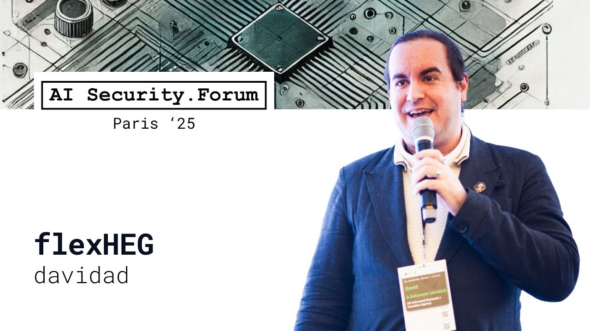
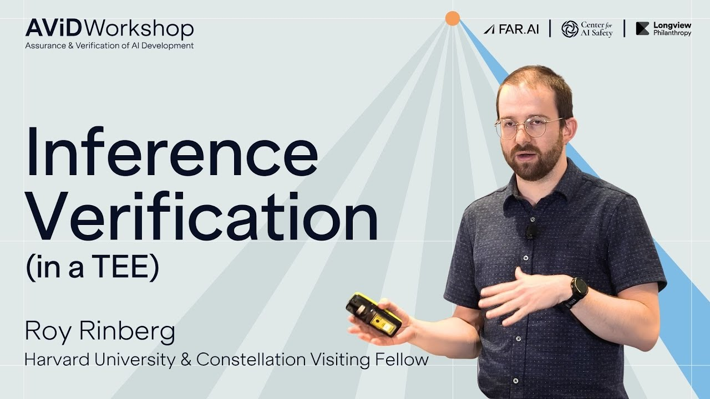
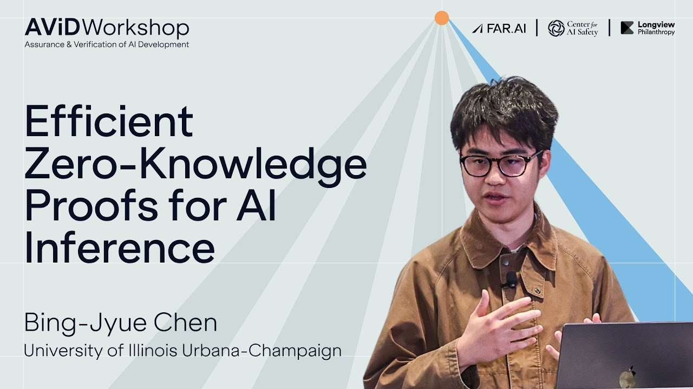
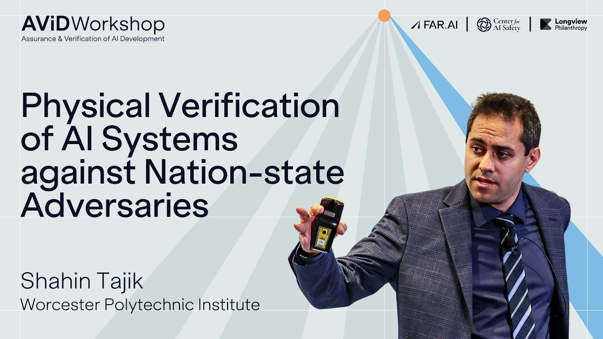

Unit 03
Dive deeper
This unit is for choosing a technical direction. Choose one primary track below and work through its readings. That is the required part of the unit.
The five tracks are starting points and do not cover the whole field. Verification is technically and politically messy, and the summaries that exist leave gaps. Use the readings to get your bearings, then work out for yourself what the field needs and what a six-day project could test.
How to use this unit
Choose one primary track
Read one track closely. If your project crosses boundaries, add a supporting reading from another track. You do not need to work through all of them.
EXERCISE
Required
10-15 min
100 experts
Proof Works
Allocate 100 imaginary hires across the verification field. You can submit your answers at the end, but mostly use it to think through the kinds of talent verification will need and where you would put it. If you think something important is missing from the five areas below, that can be your project.
Open the exercise
Mechanisms that try to make the chip, package or attached hardware produce evidence about where it is, what it is allowed to run, or what work it performed.
WATCH 3.1
12 min
flexHEG
davidad, AI Security Forum
Defines what counts as a flexHEG: hardware governance the owner can trust not to enable covert surveillance, and a governance authority can trust to enforce disclosed policies, working even air-gapped, with rules updatable every ten minutes by cryptographic quorum. It ends with the six-component design and why each part looks feasible.

Watch on YouTube
READ 3.2
40-60 min
Hardware-Enabled Governance Mechanisms
Kulp et al. (RAND, 2024)
A RAND catalogue of hardware governance mechanisms, more a reference than a read-through. Offline licensing, location verification, performance counters and tamper evidence each rest on different assumptions and fail in different ways.
What to read
Executive summary, then skim the mechanism catalogue for mechanism names and tradeoffs.
Link
READ 3.3
15-20 min
Guaranteeable Memory: An HBM-Based Chiplet for Verifiable AI Workloads
Petrie (2025)
A short proposal for a chiplet that lets high-bandwidth memory participate in workload verification, moving the root of trust closer to where the model and activations pass.
What to read
The full paper.
Link
READ 3.4
45-60 min
Guardain: Protecting Emerging Generative AI Workloads on Heterogeneous NPU
Dhar et al. (IEEE S&P, 2025)
A systems-security paper rather than a governance proposal, included as an example of runtime protection and isolation for generative workloads on heterogeneous accelerators.
What to read
Abstract, introduction, architecture and evaluation; skim the hardware details.
Link
Checking whether an output plausibly came from the claimed model, even when exact deterministic replay is unavailable.
WATCH 3.5
11 min
Inference Verification in a TEE
Roy Rinberg, AI Security Forum
Non-determinism in inference verification turns out to be tractable: fewer than a thousand tokens separate a model from its quantised version, and running the verifier inside a TEE answers who verifies the verifier. The talk closes with a framing worth keeping, that bug catching, hacker detection and treaty verification are the same problem at different levels of trust and adversary power.

Watch on YouTube
READ 3.6
40-60 min
Verifying LLM Inference to Detect Model Weight Exfiltration
Rinberg et al. (2025)
A security-game version of inference verification, asking whether a service can secretly use exfiltrated weights while still producing outputs that pass a verifier's statistical checks.
What to read
Abstract, introduction and the results.
Link
READ 3.7
40-55 min
DiFR: Inference Verification Despite Nondeterminism
Karvonen et al. (2025)
Explains why exact replay is brittle, then uses distributional fingerprints to verify nondeterministic inference without requiring every floating-point operation to reproduce bit-for-bit.
What to read
Abstract, introduction and the method.
Link
Proving a claim about a model or training run without revealing the weights or data.
WATCH 3.8
20 min
Efficient Zero-Knowledge Proofs for AI Inference
Bing-Jyue Chen, AI Security Forum
Proving one GPT-2 token has gone from an hour to about 1.5 seconds in three years, and this talk explains where the speedups come from, collapsing linear operations into single constraints and exploiting the structure of exponentiation tables. It also compares what a cryptographic proof guarantees with what TEE attestation guarantees.

Watch on YouTube
READ 3.9
30-45 min
Verifiable evaluations of machine learning models using zkSNARKs
South et al. (2024)
A model-attestation construction in which the evaluator gets cryptographic evidence about model performance without learning the private model or benchmark data.
What to read
Abstract, introduction and the construction.
Link
READ 3.10
45-60 min
zkLLM: Zero Knowledge Proofs for Large Language Models
Sun et al. (CCS, 2024)
A systems paper on making ZK proofs for LLM inference less impractical. Read it for the engineering bottlenecks, not for treaty design.
What to read
The full paper.
Link
READ 3.11
45-60 min
ZKML: An Optimizing System for ML Inference in Zero-Knowledge Proofs
Chen et al. (EuroSys, 2024)
Compiler and systems work for ZKML inference, included to show where proof cost comes from and which optimisations matter.
What to read
The full paper.
Link
Reading network, timing, memory and other side-channel signals to infer what a cluster is doing.
WATCH 3.12
17 min
Physical Verification of AI Systems against Nation-state Adversaries
Shahin Tajik, AI Security Forum
Shows what a nation-state attacker can do to a chip: laser probing that reads individual transistors, spy implants that cost 200 dollars, and why anti-tamper enclosures exist. The constructive half covers impedance sensing to detect tampering, and compute and memory puzzles that catch a datacentre lying about its utilisation.

Watch on YouTube
READ 3.13
45-60 min
Timing and Memory Telemetry on GPUs for AI Governance
Monfared et al. (2026)
Uses challenge-response timing and GPU memory residency signals to infer whether a declared workload is really running on the claimed hardware.
What to read
The full paper.
Link
READ 3.14
20-30 min
Network Traffic Hashing
Amodo Design (2026)
A lab notebook on hashing every packet crossing a 400GbE link. SipHash and AES-GMAC sustain line rate on a 32-core CPU for realistic frame sizes, DPUs fall short, and minimum-size frames need an FPGA. This is what the tap side of evidence capture costs.
What to read
The full post.
Link
READ 3.15
20-30 min
Software-Based Memory Erasure with relaxed isolation requirements
Bursuc et al. (2024)
A proof-of-secure-erasure construction. It matters for verification because “the data or weights are gone” is a claim a system may need to prove, not just assert.
What to read
Abstract, introduction, lightweight protocol and conclusion.
Link
READ 3.16
20-30 min
Memory Wipes, a Performance Analysis
Amodo Design (2026)
First numbers for proof of secure erasure on real hardware. RAM and GPU memory on a GB200 tray wipe in about 43 minutes, but the SSDs drag a full wipe towards 24 hours, which makes disk the binding constraint. The graph-labelling scheme shows how a verifier checks the wipe without trusting the prover's hardware.
What to read
The full post.
Link
READ 3.17
40-55 min
Off-Chip Compute Verification
Baker (2026)
A design note on verifying compute from outside the chip, useful as a counterpoint to on-chip governance. Read it for what off-chip evidence can and cannot buy you.
What to read
The full document.
Link
Trusted environments, audit protocols and certification regimes that produce evidence someone else can check.
READ 3.18
65-85 min
International Governance of Civilian AI: A Jurisdictional Certification Approach
Trager et al. (2023)
A governance architecture rather than a mechanism paper. Domestic jurisdictions certify actors, and international rules rely on those certificates rather than direct inspection of every provider.
What to read
The full paper.
Link
READ 3.19
30-45 min
Verification Methods for International AI Agreements
Wasil et al. (2024)
A compact survey that separates national technical means, access-dependent methods and hardware-dependent methods, with comparisons to arms-control verification practice.
What to read
The full paper.
Link
READ 3.20
25-35 min
Tools for verifying neural models' training data
Choi et al. (2023)
Surveys tests for training-data verification based on memorisation, canaries and dataset fingerprints, and shows why “what data was used?” is a hard claim to verify.
What to read
The introduction, the verification techniques and the conclusion.
Link
Finished this unit, or spotted something off? Two minutes of feedback.